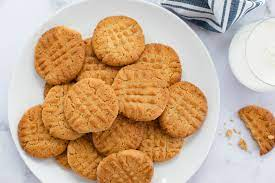

Peanut Butter Cookies

Description
A classic cookie filled with sweet and salty flavor. Perfect for lunches, after dinner, holidays, or events.
Ingredients
- 1 cup unsalted butter
- 1 cup creamy or crunchy peanut butter
- 1 cup white sugar
- 1 cup packed brown sugar
- 2 large eggs
- 2 1/2 cupps all-purpose flour
- 1 teaspoon baking powder
- 1/2 teaspoon salt
- 1 1/2 teaspon baking soda
Steps
- Cream butter, peanut butter, and sugars in a bowl
- Beat in eggs
- In another bowl, sift flour, baking powder, baking, soda, and salt
- Stir into butter mixture
- Let rest in a refrigerator for 1 hour
- Preheat oven to 375 degrees F
- Roll into 1 inch balls and put on a baking sheet. Flatten with fork making a criss cross pattern
- Bake for about 10 minutes or until just browned